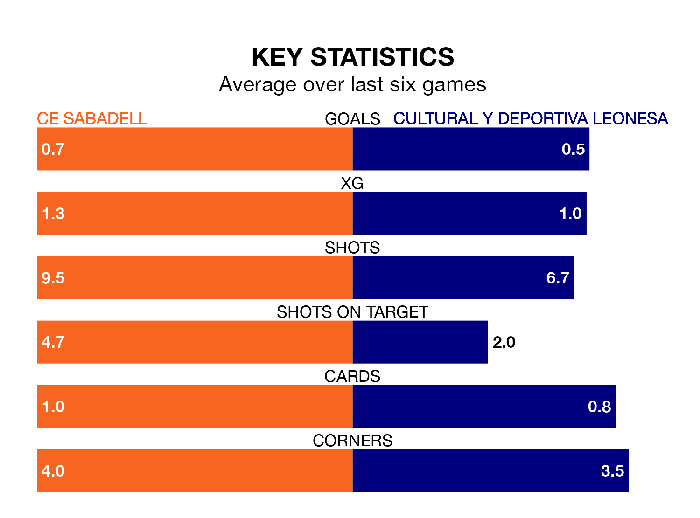

Cultural y Deportiva Leonesa travel to Estadi de la Nova Creu Alta looking to secure a first win in eight Primera Division RFEF Group 1 games against CE Sabadell on Sunday.
Cultural y Deportiva Leonesa have lost two and drawn five matches since they last earned three points – against Deportivo La Coruña on January 14.
They face a CE Sabadell side who have won three and drawn two over that time.
In Miguel Bañuz Antón, Cultural y Deportiva Leonesa can rely on one of the league's safest pair of hands. He has kept 13 clean sheets in his 24 appearances this season, and no 'keeper has prevented the opposition scoring more often in Primera Division RFEF Group 1.
In CE Sabadell's net, Adrián Ortolá Vañó has four clean sheets in 24 games. He has conceded a goal every 64 minutes, nearly three times as often as the 180 minutes between goals for Bañuz Antón.
With 24 goals in 26 games so far this season, the visitors are scoring at below the league average rate with 0.9 goals per game. But they are conceding fewer than average too, letting in 20 goals at a rate of 0.8 per game.
The home team, meanwhile, are average scorers, with 1.0 goal per game. They have conceded 1.5 goals per game.
CE Sabadell are 15th in the table after 26 games, of which they have won eight and drawn four, earning 28 points.
Cultural y Deportiva Leonesa are nine places ahead of CE Sabadell in sixth, with 11 wins and nine draws putting them on 42 points.
CE Sabadell's last match was on Sunday, a 3-0 loss against Sestao River Club.
Cultural y Deportiva Leonesa drew 1-1 with SD Tarazona last time out, on March 2, with Jaume Pol Vidal on the scoresheet.
Updated: 09:34 (UTC), 08/03/24